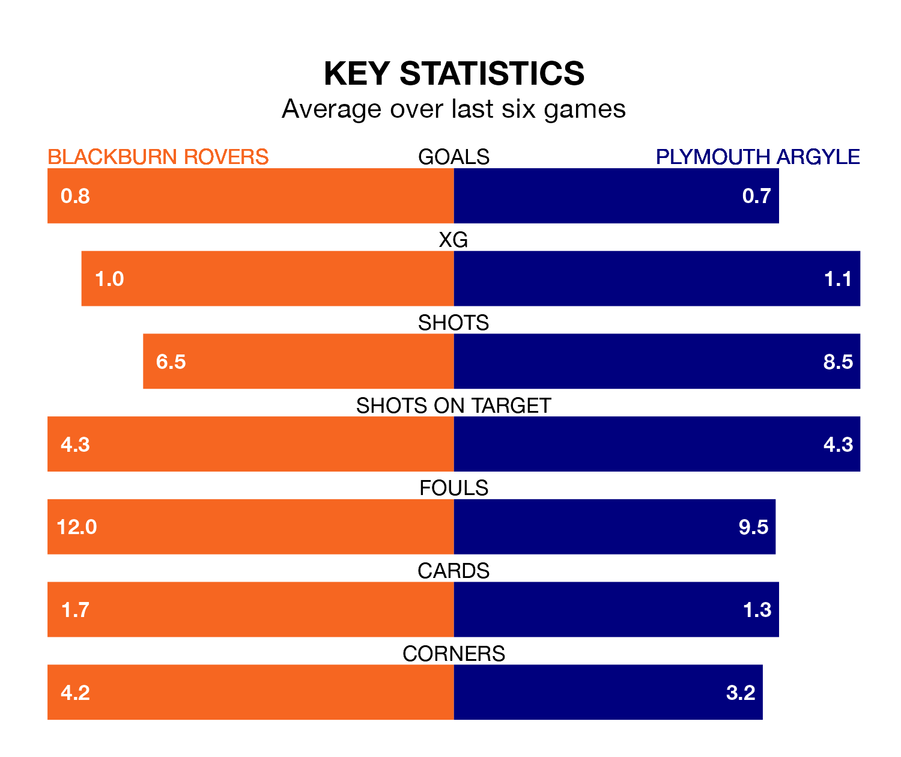

Blackburn Rovers face Plymouth Argyle at Ewood Park on Saturday looking to secure a first win in seven EFL Championship games.
Blackburn have lost two and drawn four matches since they last earned three points – against Stoke City on February 10.
They face a Plymouth side who have won just one and drawn one over that time.
In Samuel Szmodics, Blackburn have the league's sharpest shooter so far this season. He has notched 20 goals in 34 appearances.
His goal rate of one every 150 minutes is quicker than that of Morgan Whittaker, Plymouth's top scorer with a goal every 182 minutes, and a total of 17 goals in 36 games.
With 53 goals in 36 games so far this season, Argyle are scoring more than average in the league with 1.5 goals per game. But they are conceding more than average too, letting in 60 goals at a rate of 1.7 per game.
Rovers, meanwhile, are average scorers, with 1.4 goals per game. They have conceded 1.8 goals per game.
The home team are 18th in the table after 36 games, of which they have won 11 and drawn seven, earning 40 points.
The Pilgrims are two places ahead of Blackburn in 16th, with 10 wins and 10 draws putting them on the same number of points.
Blackburn's last match was on Tuesday, a 1-1 draw against Millwall, with Szmodics getting the goal for Blackburn.
Plymouth lost 1-0 against Sheffield Wednesday last time out, also on Tuesday.
Updated: 09:34 (UTC), 08/03/24